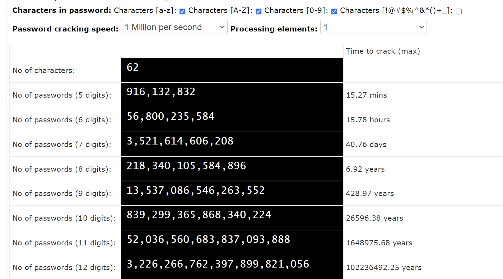
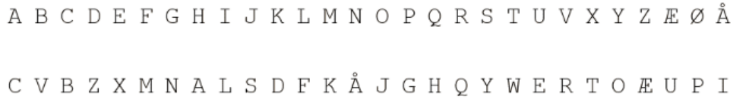

It-Sikkerhed
Hvad har vi beskæftiget os med under dette forløb?
I dette forløb har vi set film, lært hvor dårlige vores simple koder til vores sociale medier er og ikke mindst haft besøg af nogle nørder inden for feltet.
Hvorfor er min adgangskode let at gætte? Hvor meget stærkere bliver den af at tilføje endnu et ciffer?
Vi har i dette forløb taget et kig på en hjemmeside, som gav os svar på, hvad sandsynligheden for at knække vores adgangskoder var. Vi fandt ud af, at jo flere tegn er en mulighed og jo flere cifre koden består af, desto svære er den at gætte.
Vi fandt ud af, at der er en matematisk sammenhæng. Antallet af kombinationer muligt er bestemt efter antal af symboler muligt at vælge opløftet i antallet af cifre.
Forskellige former for kryptering af koder:
Cæsarkryptering:
Cæsarkryptering er en krypteringsmetode, som blev anvendt i romerrigt. Ved krypteringen forskydes alle alfabetetes bogstaver et antal positioner. Nedenunder ses en tabel som eksempel af krypteringen ved én forskydning.

Et eksempel på cæsarkryptering ved en forskydning/rotation kunne være mit navn ,Frederik. Dette ville blive til "Gsfefsjl".
Substitutionskryptering:
Ved subsitutionskryptering byttes vilkårligt rundt på alfabetets bogstaver. I modsætning til cæsarkryptering, behøver der ikke være et klart mønster, hvilket gør krypteringen stærkere. Vi fik en hjemmeopgave, hvor vi skulle dekryptere et kryptogram. Svaghederne blev da tydelige, så snart et bogstav blev identificeret, begyndte en dominoeffekt og inden længe var alle bogstavers substitution fundet. Nedenunder ses et eksempel på hvordan bogstaverne har byttet plads vilkårligt.
Vigenèrekryptering:
Vigenèrekryptering blev beskrevet af Blaise de Vigenère tilbage i sltuningen af 1500tallet. Det er en form for kryptering hvor alfabetes bogstaver kombineres med hinanden med en "nøgle". Nøglen er et ord, som består af bogstaver fra alfabetet, og de bogstaver bestemmer antallet af forskydninger bogstaverne i det ord man ønsker krypteres forskydes. Forskydes et bogstav med bogstavet a, forskydes det nul gange, b en gang og sådan fortsætter det indtil z ved 25 forskydninger.
Nedenfor ses sætningen "Listen very carefully" krypteret vha. vigenèrekryptering med ordet "allo" som nøgle:

Skal man foretage krypteringen på egen hånd, kan det at gå hele alfabetet igennem for hvert bogstav virke ret frustrerende. Til dette kan denne tabel med fordel benyttes: